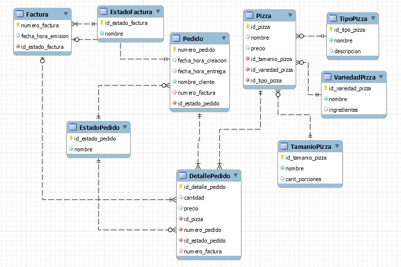
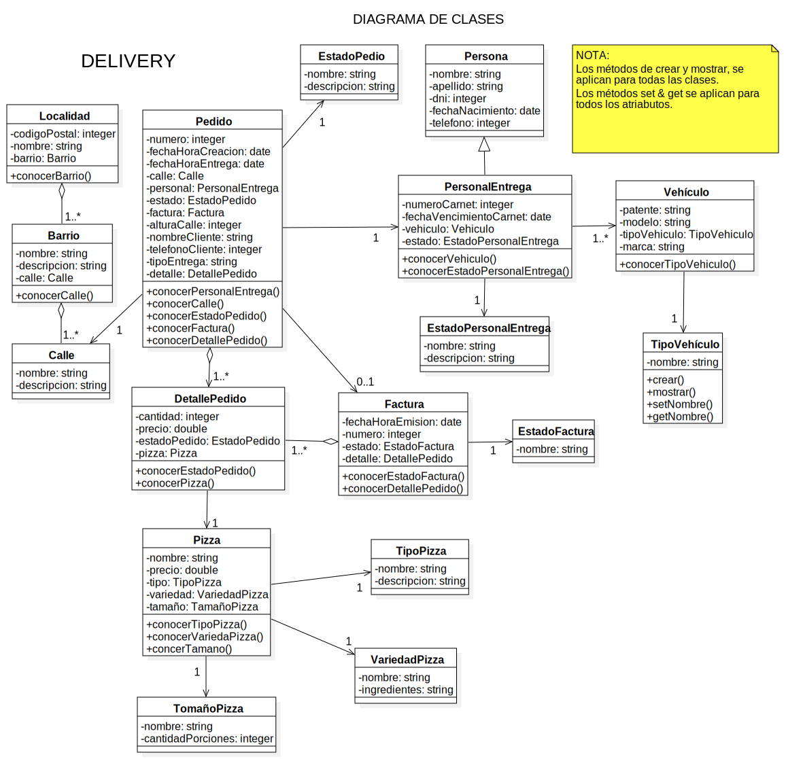
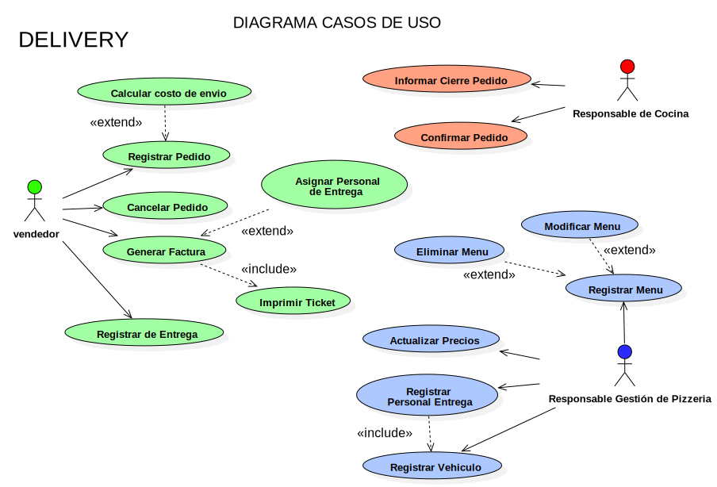
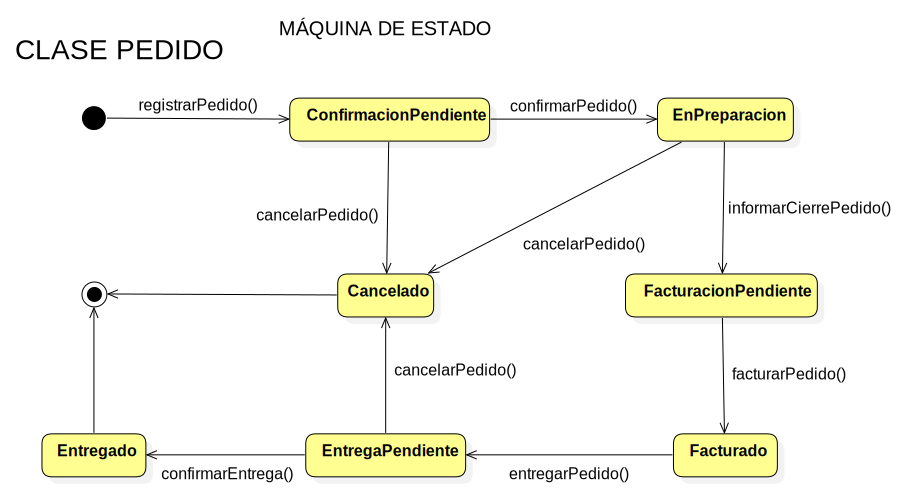

PROYECTO DELIVERY - PLAN 111MIL
INTRODUCCIÓN
En el siguiente documento se desarrolla las características esenciales de un sistema de información correspondiente al dominio de Caso Práctico Nº2 - Pizzeria en el marco del Plan111.
Estas características comprenden la definición de los objetivos, límites, alcances del sistema, los procesos que se llevan a cabo dentro del mismo, su arquitectura de software, tecnologías aplicadas en el desarrollo, definición de la estructuras de la base de datos a través del diagrama de entidad-relación, la diagramación del modelo del sistema en lenguaje de modelado unificado (UML), diagrama de casos de uso y máquina de estado. Para la obtención de datos necesarios se utilizó el dominio de negocio aportado por el Plan111 como base añadiendo el proceso de Delivery.
Dominio
A continuación se detalla el enunciado para conocer el dominio con el cual se trabajará.
Una
pizzería de la ciudad ofrece a sus clientes una amplia
variedad de pizzas de fabricación propia, de
varios tamaños (8, 10 y 12 porciones). Los clientes tienen a disposición un menú que describe para cada
una de las
variedades, el
nombre, los
ingredientes y el
precio según el
tamaño y el
tipo (a la piedra, a la parrilla, de molde) de la
pizza. Los clientes realizan sus pedidos en el mostrador o por teléfono.
El
pedido debe contener el
nombre del cliente, para llamarlo cuando su pedido está listo; la
cantidad de pizzas, el
tamaño, la
variedad, la
fecha del pedido, la
hora en la que el pedido debe entregarse y la
demora estimada informada al cliente.
El pedido va a la cocina y cuando está preparado se informa al que lo tomó para que se genere la
factura correspondiente y se le entregue el pedido al cliente.
Esta empresa también cuenta con el servicio de delivery, cuando se toma dicho pedido (puede ser telefónico) deberán
solicitarse datos extras como
direccion y
número de teléfono. Con los datos solicitados, el pedido será entregado al
personal de entrega para poder efectuar la entrega requerida por el cliente.
El dueño de la pizzería ha manifestado la necesidad de acceder al menos a la siguiente información:
- Variedades y tipos de pizzas más pedidas por los clientes.
- Ingresos (recaudaciones) por períodos de tiempo.
- Pedidos (cantidad y monto) por períodos de tiempo.
- Barrios donde más se realizan entregas de pedidos.
- Mejorar la información entregada al cadete para realizar los viajes.
DESARROLLO
Procesos que se llevan a cabo
El sistema prestará soporte a los siguientes procesos que se llevan a cabo dentro de la organización:
-
Pedido: Cada pedido es generado por el cliente cuando éste los solicita teniendo a disposición un menú que describe para cada uno la variedad, nombre, ingredientes, precio y tipo de pizza que desee. Luego de que el cliente realiza la elección se despacha el pedido hacia la cocina, previamente registrado cliente, menues elegidos y fecha. Además se notifica al cliente la demora estimada del pedido.
-
Confección de Menú: La confección del menú para ofrecer a los clientes se establecen en base al tipo de pizza, la variedad y tamaño de la misma.
-
Envíos a domicilio (Delivery): En el supuesto que la entrega del pedido sea a domicilio, se le pedirá al cliente que informe su domicilio y número de teléfono para realizar la entrega. Se deberá tener en cuenta que el personal de entrega podrá llevar más de un pedido por viaje. El coste de este envío estará determinado por medio de un cálculo según la distancia que se encuentre el domicilio del negocio con respecto a la del cliente.
LÍMITE
El límite de este sistema es:
Desde la confección de menues y pedido realizado por el cliente, hasta la emisión de informes con la información de las recaudaciones variedades y tipos de pizzas más solicitados y pedidos solicitados, junto con las zonas o barrios donde se realizan más entregas y tiempos de entregas.
PROPIEDADES DEL SISTEMA
Objetivos
- Brindar soporte en la gestión de los pedidos de la Pizzería.
- Proveer información de los procesos que abarca.
Alcances
-
Atender la consulta del cliente (telefónica o personal) por el empleado.
-
Buscar el/los menues que el cliente solicita por el empleado.
-
Si el cliente esta dentro del local, entregar el/los menues al cliente por el empleado.
-
Gestionar Registrar el pedido.
-
Si el pedido fue solicitado con entrega a domicilio, cargar el mismo en el vehiculo de deliveri por el empleado.
-
Asignar el pedido a un PersonaldeEntrega para que se realize la entrega.
-
Registrar los menues que se ofrecen a los clientes. Realizar informes con la información solicitada por el dueño de la organización.
-
Registrar datos del Personal de Entrega junto con sus vehiculos.
-
Registrar datos del cliente (se usara el telefono como identificacion principal), con domicilio detallando ciudad, barrio, calle y altura.
-
El sistema debera ofrecer una hoja de ruta recomendada para entregarle o sugerirle al Personal de entrega y asi optimizar tiempo y calidad de servicio.
ARQUITECTURA DE SOFTWARE
Se define una arquitectura
CLIENTE - SERVIDOR desktop – arquitectura en capas.
Aplicación:
Se utiliza el patrón para organizar la implementación de este sistema complejo en capas de servicios auto contenidas, para logar un sistema mantenible, de bajo acoplamiento, adaptable y escalable.
CAPA DE PRESENTACIÓN
Vista Desktop
CAPA LÓGICA DE NEGOCIOS
Controladores
CAPA DE PERSISTENCIA
ORM - Hibernate
Motivaciones:
Reutilización de servicios brindados por la interfaz brindada por cada capa. Mejorar la portabilidad. Los cambios de hardware, del sistema operativo y todo lo que afecta solamente a una capa, se pueden modificar sin alterar al resto de las capas.
TECNOLOGÍAS APLICADAS
-
Lenguaje de Desarrollo: Java con JDK versión 8.0
-
Entorno de desarrollo:
-
Sistema gestor de base de datos: MySQL versión 8.0
-
Modelado del sistema: UML versión 2.0 StarUML
-
Sistema de Control de Versiones: Git
-
Gestor de Repositorios: Github Desktop
-
Generación de reportes: Jasper Reports - Ireport Versión 5.2
-
Project Object Model (POM): Maven
DIAGRAMA DE ENTIDAD-RELACIÓN (DER)

DIAGRAMA DE CLASES (UML)

DIAGRAMA CASOS DE USOS (USE CASE)

MÁQUINA DE ESTADO

HISTORIAL DE VERSIONES
| Control de Versionado | Datos |
|---|---|
| Fecha de Creación: | 15/04/2018 |
| Última Modificación: | 09/05/2018 |
| Versión Actual: | 1.13 |
INTEGRANTES
| Equipos | Integrantes |
|---|---|
| Profesores | Araceli Mendoza |
| Nicolás Oliva | |
| Ramiro Bertalot | |
| Equipo A | Guido Cavallo |
| Sebastián Cuaglia | |
| Ruben Malizia | |
| Equipo B | Daniel Rosso |
| Pablo Mansilla | |
| Federico Boccardo | |
| Hernán Grosso |